Portraits
A selection of images of various humans I loved photographing in the last 10 years, in multiple locations and with a multitude of cameras and settings. Despite shooting a lot more studio headshots lately I’m still deeply in love with capturing people on location and making the best of the environment I have with the best light I can get.
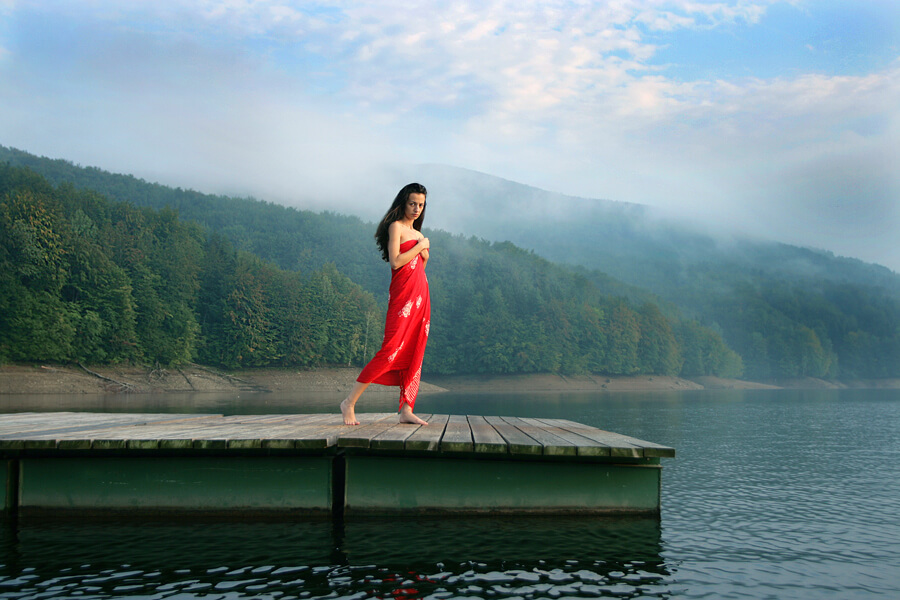
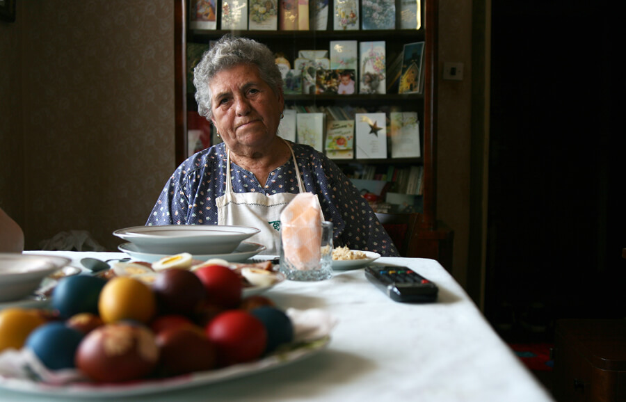
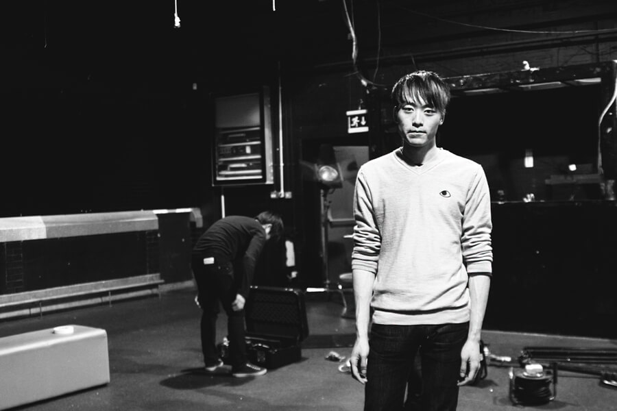
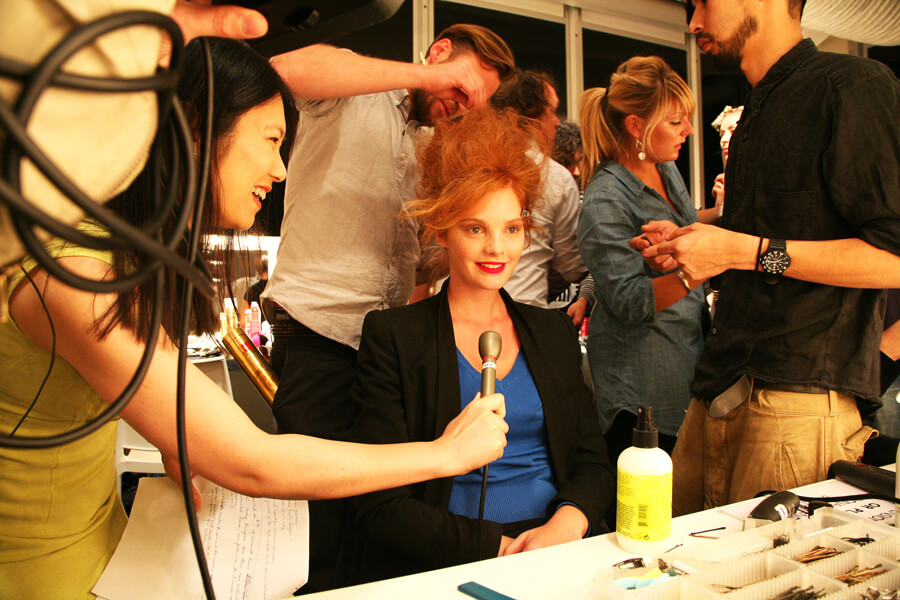
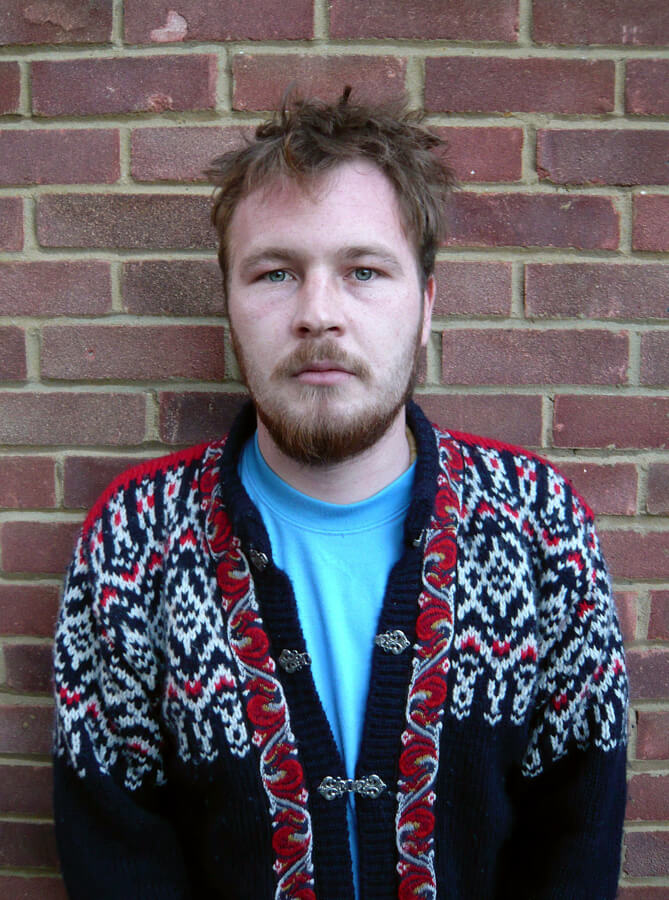
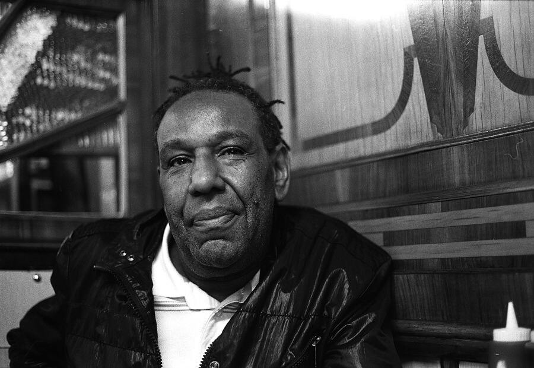
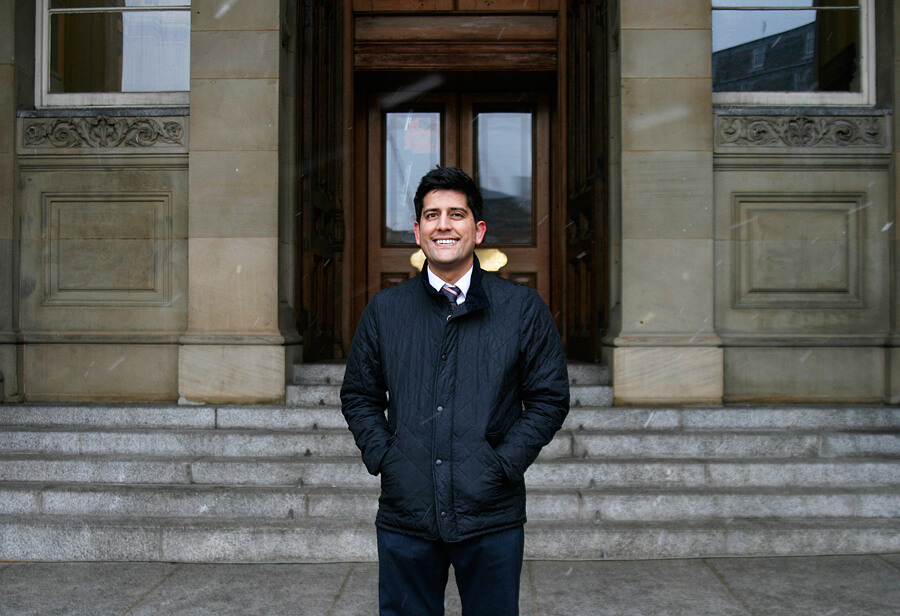


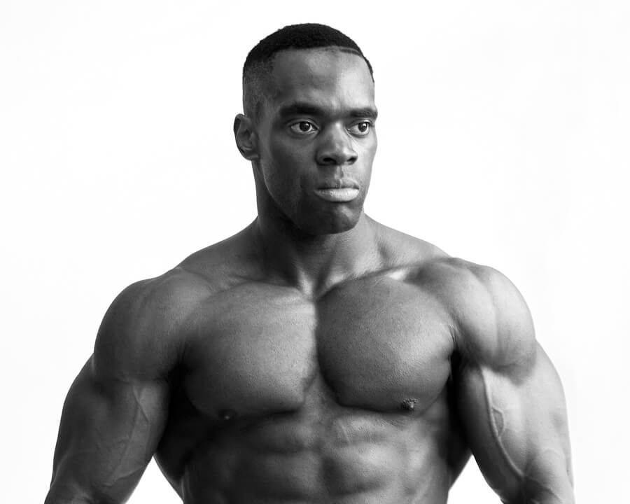
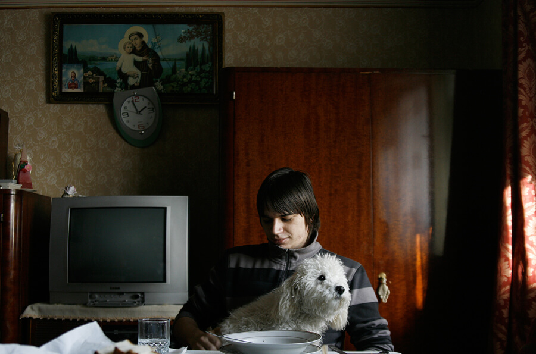

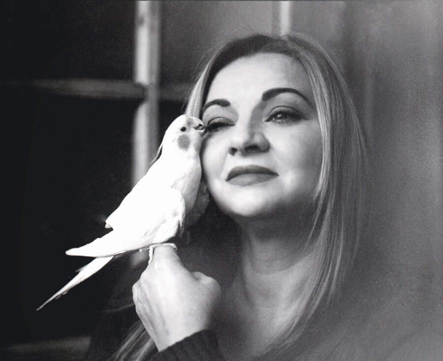
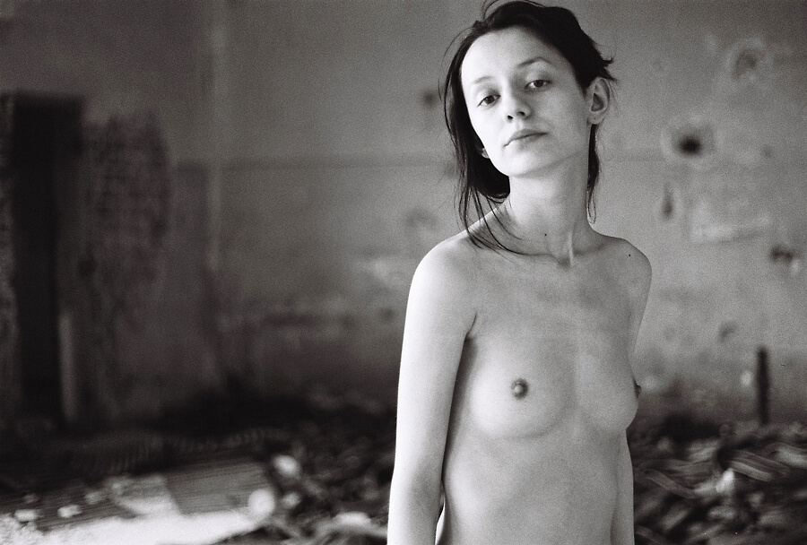
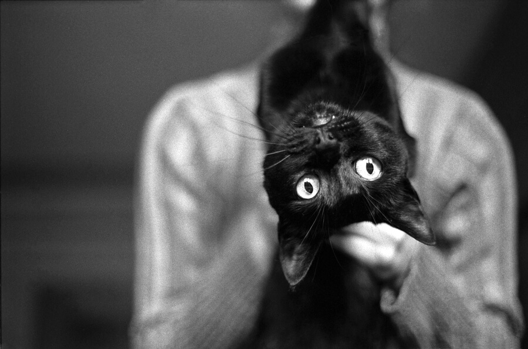
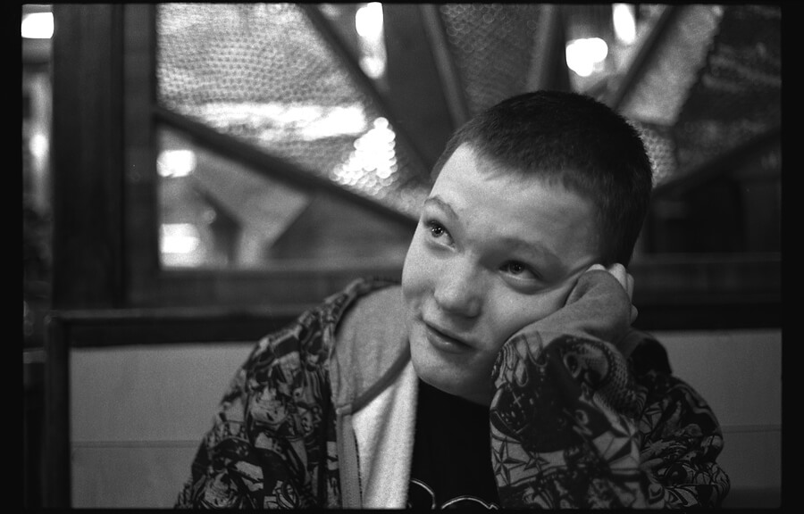
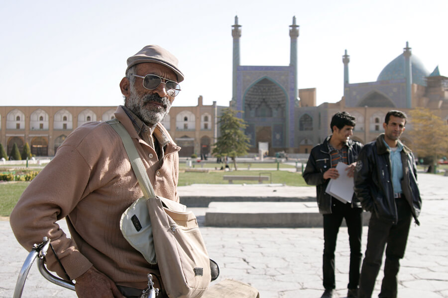

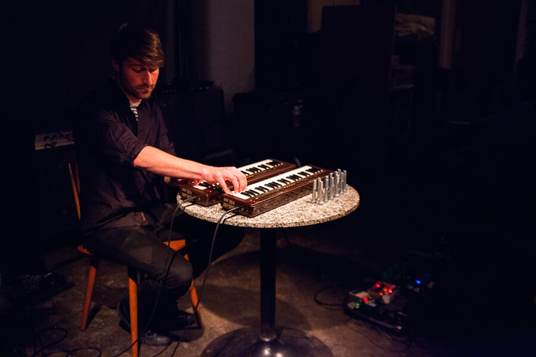